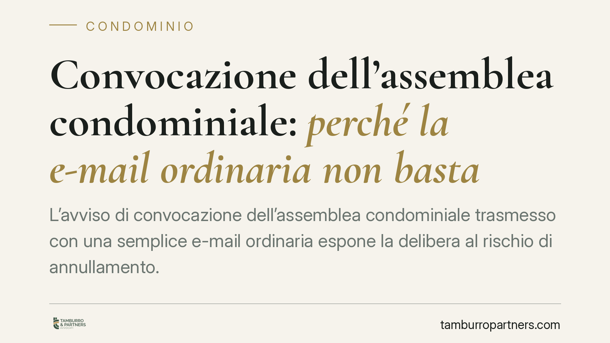

Convocazione dell'assemblea condominiale: perché la e-mail ordinaria non basta
L'avviso di convocazione dell'assemblea condominiale trasmesso con una semplice e-mail ordinaria espone la delibera al rischio di annullamento. La ragione è la mancanza di prova certa della ricezione: senza tracciabilità, non è possibile dimostrare che il condòmino sia stato regolarmente informato. Un profilo formale che incide direttamente sulla validità delle decisioni assunte.

Il quadro normativo
L'art. 66 delle disposizioni di attuazione del Codice civile disciplina la convocazione dell'assemblea condominiale. La norma prevede che l'avviso di convocazione debba essere comunicato almeno cinque giorni prima della data fissata per la prima convocazione, e individua i mezzi ritenuti idonei: posta elettronica certificata (Pec), lettera raccomandata, fax o consegna a mano.
Il comune denominatore di questi strumenti è la tracciabilità: ciascuno consente di documentare in modo certo l'avvenuta ricezione (o il rifiuto) da parte del destinatario. Il termine di cinque giorni, infatti, decorre non dall'invio ma dal momento in cui l'avviso perviene nella sfera di conoscibilità del condòmino. Senza una prova della consegna, quel termine non è verificabile.
Pec ed e-mail ordinaria: la differenza che conta
Il punto critico non è un divieto testuale di utilizzare la posta elettronica, ma la differenza tra Pec ed e-mail ordinaria sotto il profilo probatorio.
La Pec produce una ricevuta di consegna con valore legale, equiparabile a quello della raccomandata. L'e-mail ordinaria, al contrario, non genera alcuna attestazione ufficiale di recapito: non consente di provare né la data né l'effettiva ricezione del messaggio. Per questo motivo l'orientamento giurisprudenziale prevalente la considera inidonea a soddisfare i requisiti dell'art. 66 disp. att. c.c., proprio perché priva di valore legale di consegna, e non in virtù di un'esclusione espressa.
È una distinzione sostanziale: il fulcro resta la prova certa della ricezione dell'avviso.
Le conseguenze: delibera annullabile, non nulla
Il vizio nella convocazione non rende la delibera nulla, ma annullabile. La differenza è rilevante.
L'art. 1137 c.c. stabilisce che il condòmino assente, dissenziente o astenuto può impugnare la delibera davanti all'autorità giudiziaria entro trenta giorni. Per l'assente il termine decorre dalla comunicazione del verbale; per il dissenziente e l'astenuto dalla data della deliberazione.
Decorso tale termine senza impugnazione, la delibera si consolida e non è più contestabile per quel vizio. La natura meramente annullabile, e non nulla, comporta quindi un onere di reazione tempestiva: chi lamenta l'irregolarità della convocazione deve attivarsi entro il termine perentorio, pena la sanatoria del vizio.
Implicazioni pratiche
Per l'amministratore il tema si traduce in un profilo di corretta gestione: adottare per la convocazione strumenti che garantiscano prova della ricezione riduce il rischio di impugnazioni e di responsabilità connesse all'annullamento delle delibere.
Per il condòmino la questione riguarda invece la tutela: chi non ha ricevuto una convocazione regolare, o l'ha ricevuta con un mezzo non tracciabile, dispone di uno strumento di impugnazione, purché lo eserciti nei termini.
Restano ferme le previsioni del regolamento condominiale, che può disciplinare ulteriormente le modalità di comunicazione, sempre nel rispetto dei requisiti di legge.
Cosa fare in concreto
- Per l'amministratore, è opportuno privilegiare mezzi tracciabili (Pec, raccomandata, fax o consegna a mano con firma) e conservare le ricevute di avvenuta consegna.
- È utile verificare che il regolamento condominiale non imponga forme più stringenti rispetto a quelle di legge.
- Il condòmino che intende contestare la convocazione può valutare la data di ricezione dell'avviso e il rispetto del termine di cinque giorni.
- Chi ravvisa un vizio può considerare l'impugnazione della delibera nel termine di trenta giorni previsto dall'art. 1137 c.c., tenendo conto del diverso momento di decorrenza per assenti, dissenzienti e astenuti.
- È consigliabile documentare per iscritto ogni contestazione relativa alla regolarità della convocazione.
Contributo informativo a cura di Tamburro & Partners - Avv. Giuseppe Tamburro. Non costituisce parere legale.
Ogni condominio ha una storia a sé.
Se gestisci un'amministrazione e vuoi un confronto su una specifica questione condominiale, scrivi allo studio. Ti rispondiamo entro un giorno lavorativo.